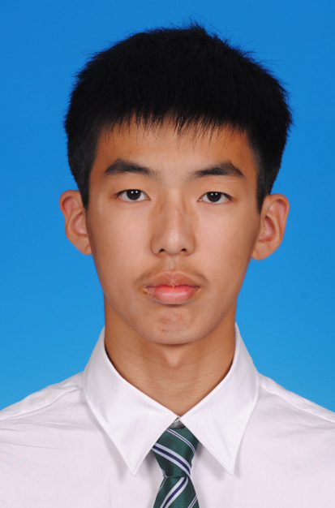

|  |
Shicheng Li
李世成
School of Electronics Engineering and Computer Science Peking University |
|
I am a third-year undergraduate majoring in Computer Science and Technology at School of Electronics Engineering and Computer Science (EECS), Peking University (PKU). In July 2018, I was selected as a member of the CS Turing Class, an elite undergraduate program established by EECS, PKU. I am enthusiastic about natural language processing (NLP). Currently, I work as a research intern in Language Computing and Machine Learning Group (LANCO), advised by Prof. Xu Sun. |
|